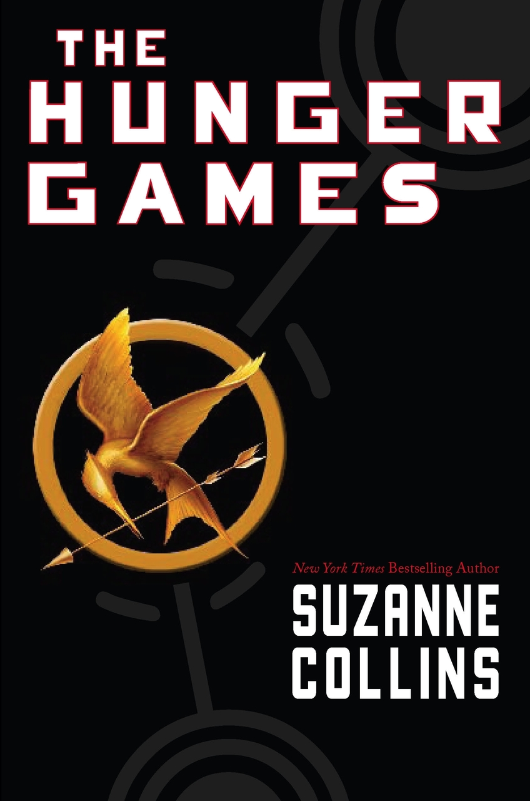
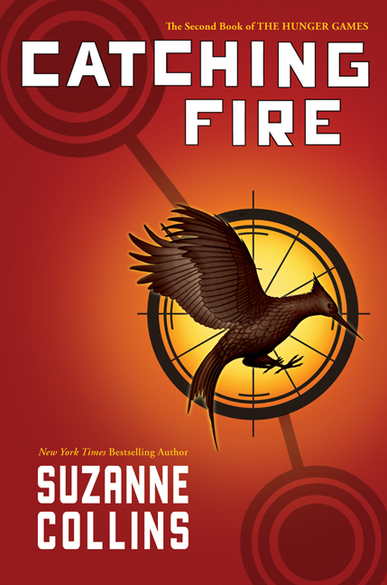

The Hunger Games Series

New York Times Bestseller, #1 NEW YORK TIMES BESTSELLER, PUBLISHERS WEEKLY'S BEST BOOKS OF 2008:CHILDREN'S FICTION, #1 USA TODAY BESTSELLER, WALL STREET JOURNAL BESTSELLER,PUBLISHERS WEEKLY BESTSELLER,PUBLISHERS WEEKLY'S BEST BOOKS OF 2008: CHILDREN'S FICTION, NEW YORK TIMES NOTABLE CHILDREN'S BOOK OF 2008, AN AMERICAN LIBRARY ASSOCIATION, TOP TEN BEST BOOKS FOR YOUNG ADULTS SELECTION, AN ALA NOTABLE CHILDREN'S BOOK, 2009 ALA AMELIA BLOOMER PROJECT LIST, #1 ON WINTER '08/'09 CHILDREN'S INDIE NEXT LIST, INDIES CHOICE--BEST INDIE YOUNG ADULT BUZZ BOOK HONOR, 2008 CYBIL AWARD--FANTASY & SCIENCE FICTION, 2009 CHILDREN'S CHOICE BOOK AWARD, TEEN CHOICE BOOK OF THE YEAR FINALIST, YALSA'S TEENS' TOP TEN, 2009, NYPL "STUFF FOR THE TEEN AGE" LIST, 2009, CCBC CHOICES 2009, A NEW YORK TIMES EDITORS' CHOICE, A KIRKUS BEST BOOK OF 2008, A HORN BOOK FANFARE, SCHOOL LIBRARY JOURNAL BEST BOOKS Of 2008, A BOOKLIST EDITORS' CHOICE, 2008, LA TIMES FAVORITE CHILDREN'S BOOKS, 2008 , BARNES & NOBLE BEST BOOKS OF 2008 FOR TEENS AND KIDS, BORDERS BEST BOOKS OF 2008: TEENS, AMAZON BEST BOOKS OF 2008:TOP 100 EDITORS' PICK & TOP 10 BOOKS: TEENS
Katniss is a 16-year-old girl living with her mother and younger sister in the poorest district of Panem, the remains of what used be North America. Long ago the districts waged war on the Capitol and were defeated. As part of the surrender terms, each district agreed to send one boy and one girl to appear in an annual televised event called, "The Hunger Games." The terrain, rules, and level of audience participation may change but one thing is constant: kill or be killed. When her sister is chosen by lottery, Katniss steps up to go in her place. (Scholastic Press, 2008)

#1 USA TODAY BESTSELLER, #1 WALL STREET JOURNAL BESTSELLER, #1 PUBLISHERS WEEKLY BESTSELLER, A NEW YORK TIMES EDITORS' CHOICE, TIME MAGAZINE: TOP 10 FICTION BOOKS OF 2009, PUBLISHERS WEEKLY'S BEST BOOKS OF 2009: CHILDREN'S FICTION, A PEOPLE MAGAZINE (TOP 10) BEST BOOK OF 2009, A LOS ANGELES TIMES BEST CHILDREN'S BOOK OF 2009, A BOOKLIST EDITORS' CHOICE, 2009, A KIRKUS BEST BOOK OF 2009, AN AMERICAN LIBRARY ASSOCIATION: BEST BOOKS FOR YOUNG ADULTS SELECTION, #1 YALSA'S TEENS' TOP TEN, 2010, NYPL "STUFF FOR THE TEEN AGE" LIST, 2010, 2010 CHILDREN'S CHOICE BOOK AWARD, TEEN CHOICE BOOK OF THE YEAR WINNER, AUTHOR OF THE YEAR NOMINEE, 2010 INDIES CHOICE AWARD WINNER--YOUNG ADULT, TOP 10 ON THE FALL 2009 CHILDREN'S INDIE NEXT LIST, BARNES & NOBLE BEST TEEN BOOKS OF 2009, BORDERS BEST BOOKS OF 2009: TEENS, AMAZON BEST BOOKS OF 2009: TOP 100 EDITORS' PICK & TOP 10 BOOKS: TEENS
Much to her shock, Katniss has fueled an unrest she's afraid she cannot stop. And what scares her more is that she's not entirely convinced she should try. As time draws near for Katniss and Peeta to visit the districts on the Capitol's cruel Victory Tour, the stakes are higher than ever. If they can't prove, without a shadow of a doubt, that they are lost in their love for each other, the consequences will be horrifying. (Scholastic Press, 2009)

#1 USA TODAY BESTSELLER, #1 NEW YORK TIMES BESTSELLER, #1 WALL STREET JOURNAL BESTSELLER, #1 PUBLISHERS WEEKLY BESTSELLER, NEW YORK TIMES NOTABLE CHILDREN'S BOOK OF 2010, PUBLISHERS WEEKLY'S BEST BOOKS OF 2010: CHILDREN'S FICTION, A BOOKLIST EDITORS' CHOICE, 2010, A KIRKUS BEST BOOK OF 2010, NPR BEST BOOKS OF 2010, A NEW YORK TIMES EDITORS' CHOICE, A CHRISTIAN SCIENCE MONITOR'S BEST CHILDREN'S BOOKS OF 2010, AN IRA YOUNG ADULTS' CHOICES BOOK FOR 2011, YALSA'S TEENS' TOP TEN, 2011, 2011 CHILDREN'S CHOICE BOOK AWARD, TEEN CHOICE BOOK OF THE YEAR NOMINEE: AUTHOR OF THE YEAR NOMINEE, CCBC CHOICES 2011, 2011 LOCUS AWARD FINALIST, 2010 NEBULA AWARD: ANDRE NORTON AWARD FOR YA SCIENCE FICTION AND FANTASY NOMINEE, BARNES & NOBLE BEST TEEN BOOKS OF 2010, AMAZON BEST BOOKS OF 2010: #3 ON CUSTOMER FAVORITES LIST
Katniss Everdeen, girl on fire, has survived, even though her home has been destroyed. There are rebels. There are new leaders. A revolution is unfolding. (Scholastic Press, 2010)